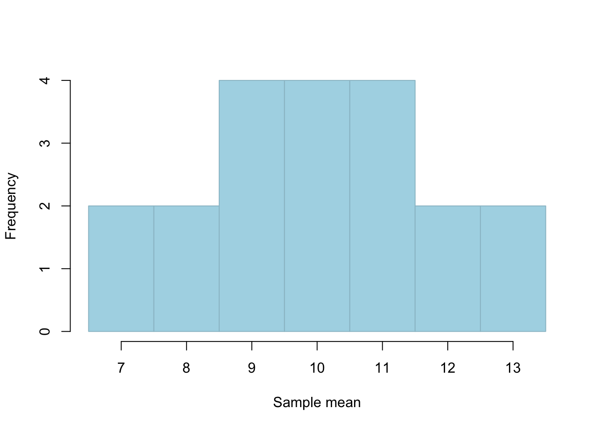
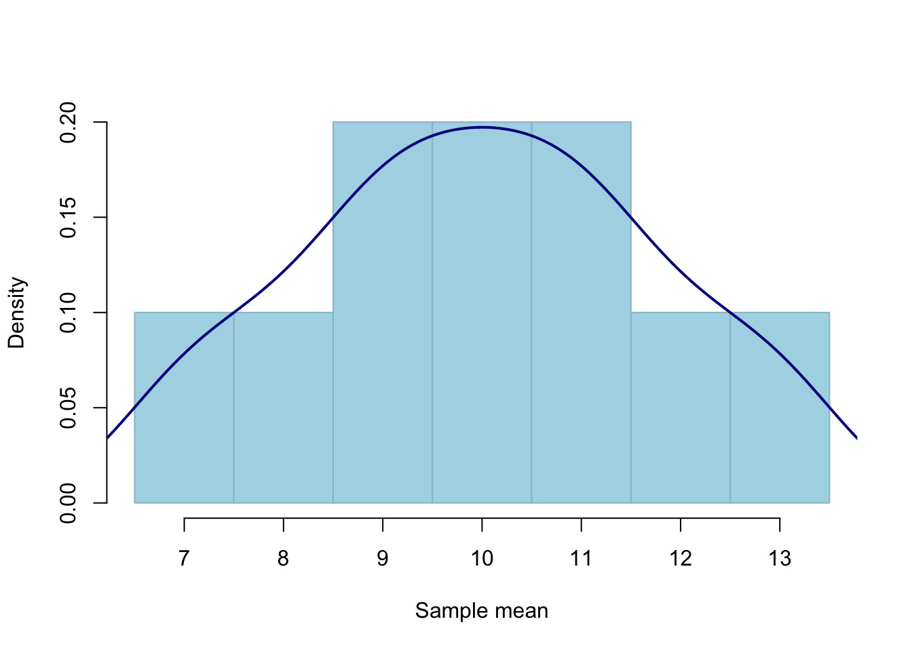
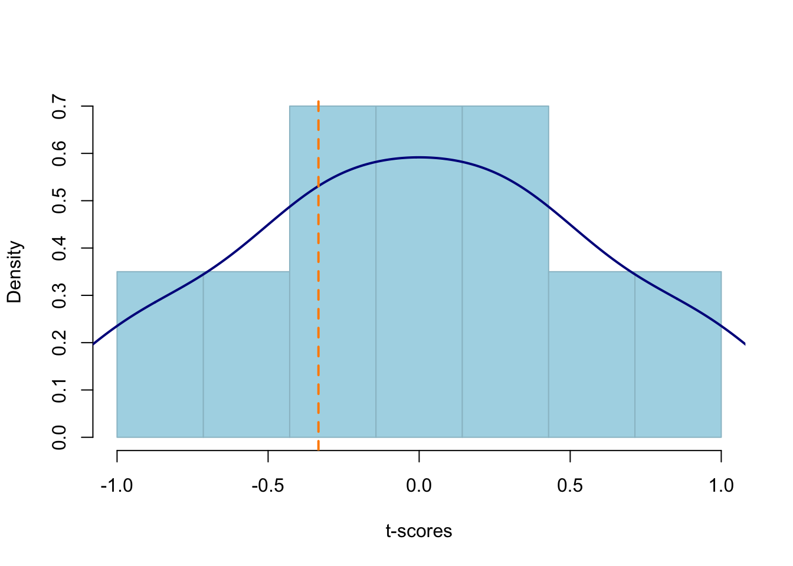

pop <- c(6, 8, 10, 12, 14)
mu <- mean(pop)
mu[1] 10To perform a hypothesis test, we need to:
Identify the null hypothesis, denoted \(H_0\).
Identify the alternative hypothesis, denoted \(H_1\).
Select the significance level, denoted \(\alpha\). Common values are .1, .05, or .01. In Psychology, we usually use .05.
Compute the test statistic. This is used to measure how consistent the data are with the null hypothesis.
Compute the p-value.
Make a decision:
In statistics, a hypothesis is a claim, in the form of a precise mathematical statement, about the value of a population parameter.
Examples:
\(\mu = 100\)
where \(\mu\) is the population mean IQ score.
\(\sigma = 15\)
where \(\sigma\) is the standard deviation of IQ scores in the population.
Note:
A hypothesis is a claim about a population parameter and not about a sample statistic.
We can compute the value of the sample statistic, so there is no need to perform a test on what its value might be. We can simply look at the value, unlike population parameters. If your sample has a mean \(\bar x = 2\), would it make sense to ask whether the sample mean is 0? No, clearly the sample mean is 2 which is different from 0.
We make hypotheses about things that are unknown, such as parameters.
To perform a hypothesis test we need:
The null hypothesis, denoted \(H_0\).
The alternative hypothesis, denoted \(H_1\).
The test statistic. This is used to measure how consistent the data are with the null hypothesis. For testing a mean we use the t-statistic, denoted \(t\).
The significance level, denoted \(\alpha\)
The p-value
Suppose you have an imaginary toy population of 5 individuals, on which you collect a score, and the mean score is actually equal to 10.
pop <- c(6, 8, 10, 12, 14)
mu <- mean(pop)
mu[1] 10If we could only afford to sample \(n = 2\) individuals, and take all possible random samples, what would all the possible sample means look like?
| sample_id | sample | xbar |
|---|---|---|
| 1 | (8, 6) | 7 |
| 2 | (6, 8) | 7 |
| 3 | (10, 6) | 8 |
| 4 | (6, 10) | 8 |
| 5 | (12, 6) | 9 |
| 6 | (10, 8) | 9 |
| 7 | (8, 10) | 9 |
| 8 | (6, 12) | 9 |
| 9 | (14, 6) | 10 |
| 10 | (12, 8) | 10 |
| 11 | (8, 12) | 10 |
| 12 | (6, 14) | 10 |
| 13 | (14, 8) | 11 |
| 14 | (12, 10) | 11 |
| 15 | (10, 12) | 11 |
| 16 | (8, 14) | 11 |
| 17 | (14, 10) | 12 |
| 18 | (10, 14) | 12 |
| 19 | (14, 12) | 13 |
| 20 | (12, 14) | 13 |
As you see above, each sample leads to a different sample mean. We can plot those means with a histogram, to find what sample means happen more often, and which sample means happen less frequently, when the population mean is in fact \(\mu = 10\). Remember? I gave you a population where the mean was exactly equal to 10.

We notice a few things. When the population mean is \(\mu = 10\):
In this case,
So, if the population mean is truly \(\mu = 10\), it is less likely to obtain a sample with a mean of 7, and it is more likely to obtain a sample with a mean of 9, 10, or 11 for example.
We can also add a density above:

The plot above shows us the possible values that the sample means can take, assuming that the population mean is equal to some value (in this case assuming \(\mu = 10\))
Key question
If you obtained a sample with a mean of 20, would you find this consistent with a population having a mean of 10, or would you start doubting this and perhaps find it more likely that the population mean was different from 10?
If your sample had a mean of 20, when in fact this is a value you don’t expect to happen that often in the above distribution, we would find this a surprising result, and we would doubt the population has a mean of 10.
Now we must go back to reality and realise that we cannot really take all possible samples from a population. We can only afford one and we must work with that single sample we have.
Suppose your sample is (6, 12).
Let’s compute the observed sample mean:
x <- c(6, 12)
xbar <- mean(x)
xbar[1] 9We wish to test whether the population the sample came from has a mean different from 10.
\[H_0: \mu = 10\] \[H_1: \mu \neq 10\]
Key question:
The mean in our sample is 9. Could a sample mean of 9 easily come from a population that has a mean of 10? Or is it very unlikely for a population with mean 10 to give rise to a sample with mean 9?
Instead of working with the sample means directly, we work with the standardised sample means, using the t-statistic to standardise them. (Call it t-score if you prefer, to remind you of the z-score). The formula is:
\[ t = \frac{\bar x - \mu_0}{s / \sqrt n} \]
First let’s compute the observed value of the t-statistic, which uses the mean from the observed sample. Furthermore, remember that in our case \(H_0 : \mu = 10\).
xbar <- mean(x)
xbar[1] 9s <- sd(x)
n <- 2
SE <- s / sqrt(n)
SE[1] 3tobs <- (xbar - 10) / SE
tobs[1] -0.333So:
\[ t = \frac{9 - 10}{3} = -0.33 \]
We know that the t-statistic follows a \(t(n-1)\) distribution. So, in our case a \(t(1)\) distribution.
We can use the previous histogram of sample means and, instead of plotting the actual means, we can plot the t-score of each mean from 10. This will show how far is each sample mean from the hypothesised value (10), in SE units:
Let’s add the observed t-score on the plot

How likely is it to obtain a t-score at least as extreme as -0.33?
In this case \(H_1\) has the \(\neq\) symbol. Something is different from 10 when it’s either much larger or much smaller. So we find the probability of t-statistics that are either more distant from the hypothesised value of 10 on the left tail, but also on the right tail.
How likely is it to obtain a t-score either lower than -0.33 \((=-|t|)\) or larger than 0.33 \((= +|t|)\)?
pvalue <- pt(-abs(tobs), 1, lower.tail = TRUE) +
pt(+abs(tobs), 1, lower.tail = FALSE)
pvalue[1] 0.795Comparing the p-value with \(\alpha\) = 0.05, we find that the p-value is larger than the significance level and as such we do not reject \(H_0\).
The sample data do not provide sufficient evidence to reject the null hypothesis that the sample \((6, 12)\) came from a population with mean 10.
What about if the sample you collected was (172, 194)? Could this come from a population having mean = 10?
x <- c(172, 194)
xbar <- mean(x)
s <- sd(x)
n <- 2
SE <- s / sqrt(n)
SE[1] 11tobs <- (xbar - 10) / SE
tobs[1] 15.7pt(-abs(tobs), df = 1) + (1 - pt(+abs(tobs), df = 1))[1] 0.0404or
2 * pt(abs(tobs), df = 1, lower.tail = FALSE)[1] 0.0404The p-value is \(\leq 0.05\) so we reject \(H_0\)
At the 5% significance level, the sample data provide strong evidence against the null hypothesis that the sample \((172, 194)\) came from a population with a mean of 10, and in favour of the alternative hypothesis that the sample came from a population with a mean different from 10.
We have learned to assess how much evidence the sample data bring against the null hypothesis and in favour of the alternative hypothesis.
The null hypothesis, denoted \(H_0\), is a claim about a population parameter that is initially assumed to be true. It typically represents “no effect” or “no difference between groups”.
The alternative hypothesis, denoted \(H_1\), is the claim we seek evidence for.
We performed a hypothesis test against \(H_0\) (and in favour of \(H_1\)) following these steps: